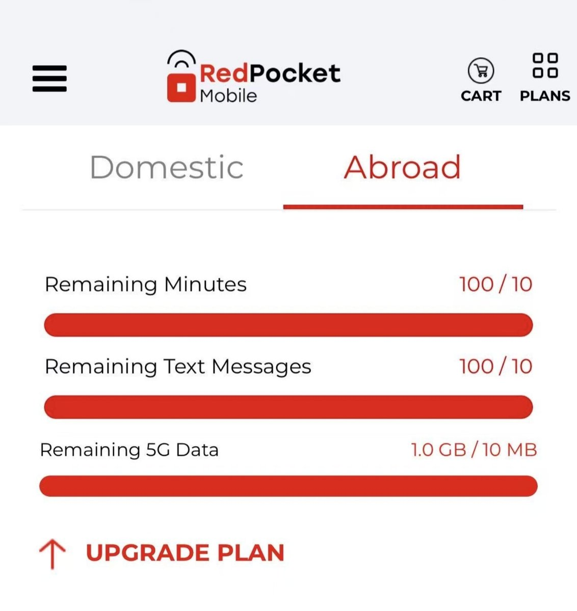
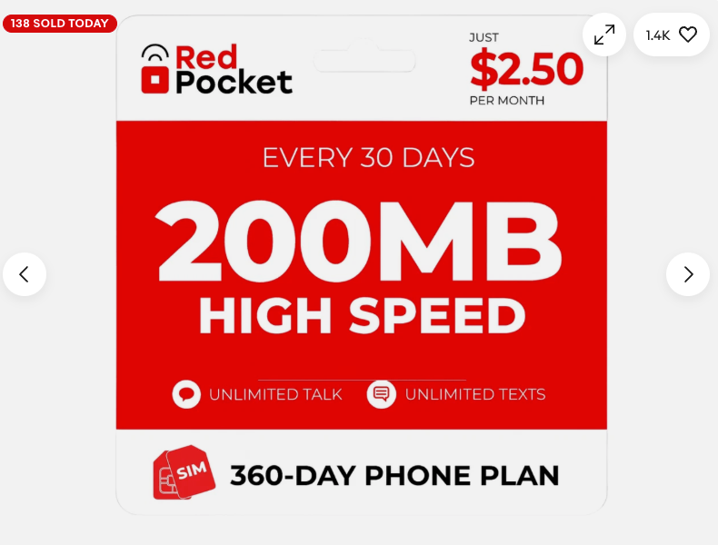
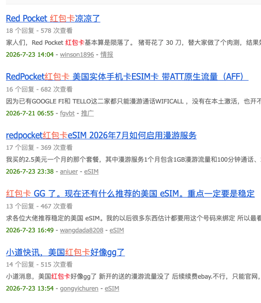

红包卡（美国eSIM神卡）跌落神坛，今日RedPocket Mobile对所有老用户设定，通话10分钟、短信10条、流量10MB
不过老用户的用量还没重置成新的，现在30刀/年恐跟Tello一样难开国际漫游权限，只能纯WiFicall了
如果是这样，除了实体美国号码的特点，不如设置转接到Google Voice得了

不过老用户的用量还没重置成新的，现在30刀/年恐跟Tello一样难开国际漫游权限，只能纯WiFicall了
如果是这样，除了实体美国号码的特点，不如设置转接到Google Voice得了



红包卡 eSIM 神卡套餐，成为历史了。
30 刀/年 = 美国实体号 + eSIM + 每月 1G 漫游流量（纯正t mobile IP）。
这个价格的服务放在任何一家美国运营商都是天花板级别的性价比，圈内公认的保号全能神卡。
但昨天论坛爆出消息：新开已经不再附送 1G 漫游流量了。 https://t.co/mvGP8fdb9L
30 刀/年 = 美国实体号 + eSIM + 每月 1G 漫游流量（纯正t mobile IP）。
这个价格的服务放在任何一家美国运营商都是天花板级别的性价比，圈内公认的保号全能神卡。
但昨天论坛爆出消息：新开已经不再附送 1G 漫游流量了。 https://t.co/mvGP8fdb9L